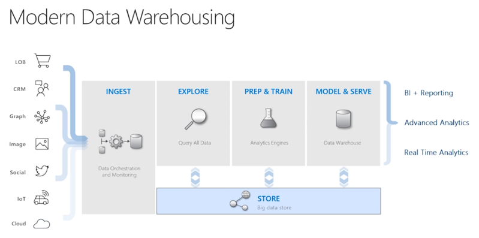
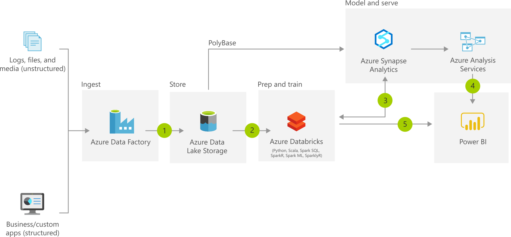
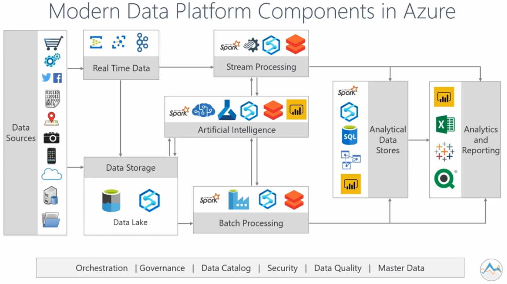
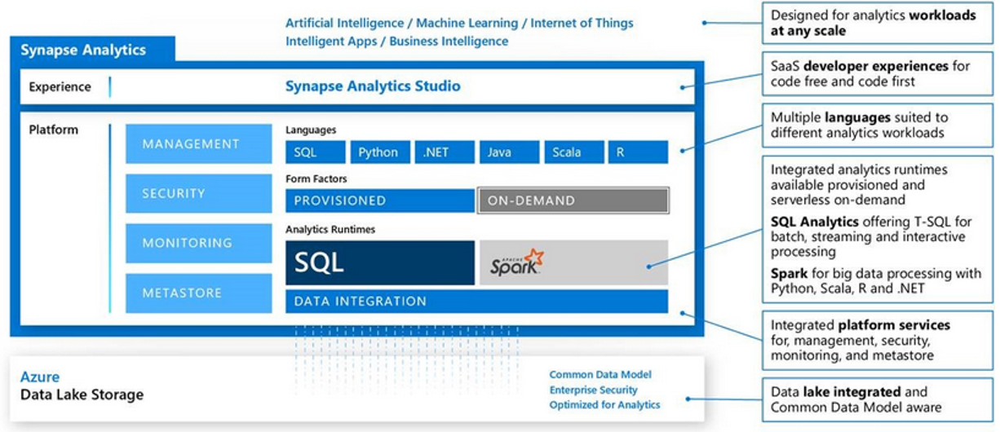

Business Intelligence
Cloud Plattformen (2)
Modern Data Warehousing

Modern Data Warehousing

Microsoft Azure


Microsoft Azure
portal.azure.com

Übersicht Azure Services
Azure ServicesMicrosoft Azure - modern data warehouse

Microsoft Azure - modern data warehouse

Microsoft Azure - Pricing


Azure Datenbank
Azure stellt zwei SQL Datenbanken bereit:
- Azure SQL Database (Computer mit SQL Server)
- Azure Synapse Analytics (vormals SQL DW)
- Alternative in AWS Redshift und Google Big Query
Azure SQL Database
Symmetric Multi Processing (SMP) Architektur Viele CPUs, aber nur ein Speicher => Engpass
- PaaS Version der On-Premise Microsoft SQL Server Datenbank
- Für Lese- und Schreibzugriffe optimiertes OLTP System
- Grundsätzlich auch für ein DWH geeignet
- Azure SQL Database Hyperscale (bis 100+ TB) für Szenarien > 4 TB
Deployment Optionen:
- Managed Instance (ähnlich On-Premise Microsoft SQL Server)
- Elastic Pool (für Compute Resources)
- Integration mit Data Factory
Azure SQL Database
Ressourcen Management
- Database Transaction Units (DTUs): Speicher, Hauptspeicher und CPU
- V-Core erlauben getrennte Skalierung von Storage & Compute
- Provisioned & Serverless Deployment
V-Core Tiers:
- General Purpose
- Hyperscale
- Business Critical
Azure SQL Database
Eine Cloud-basierter OLTP Server (kein OLAP Server) Aber: Es gibt keinen Grund, weshalb ein OLTP Server nicht auch analytische Abfragen bedienen kann (bis zu einer Lastgrenze) Für bestimme (kleinere) DWH Szenarien mag es sogar besser sein, eine Azure SQL Database zu verwenden
- Bei einem hohen Maß an Parallelität durch viele Nutzer, Berichte und ETL Prozesse (Azure Synapse Analytics ist auf maximal 128 gleichzeitige Abfragen begrenzt)
- Vereinfachte Verarbeitung (und Optimierung) in der SMP Architektur
- Micro-Batches in Event-Driven oder Streaming Architekturen (IoT, Industrie 4.0, Sensoren)(im Gegensatz zu sehr großen Datenmengen in regelmäßigen Abständen)
- Weniger als ca. 1 bis 5 TB Daten
- Bis ca. 100 TB auch günstiger
Azure Synapse
Massively Parallel Processing (MPP) Architektur Control Node verteilt Abfrage an Compute Nodes, parallele Berechnung, Zusammenführung der Ergebnisse im Control Node
- Basiert auf der Microsoft SQL Server Engine
- Skalierbarkeit, Elastizität, Concurrency
- Für ein (großes) Cloud DWH optimiert
- Die verteilten Tabellen erscheinen logisch als eine Tabelle
- Trennung von Compute & Storage ermöglicht das (kostensparende) Stoppen der Datenbank (Compute)
- Integration mit Data Factory
- Hochverfügbar (99.9%)
Azure Synapse
Problem: Skalierbarkeit des verteilten Speichers („Storage“)
- Eine Gleichverteilung der Daten bei Erhöhung der Anzahl der Speicherknoten ist aufwendig
- Round Robin Distribution, Hash Distribution, Replicated Distribution
- Maximal 60 Speicherknoten
Azure Synapse
Ressourcen Management
- Compute Data Warehouse Units (cDWUs): Ein Mix aus CPU, Speicher und I/O
- cDWU 100 (Minimum)
- 1 Compute Node und 100 GB Speicher verteilt auf 60 Speicherknoten
- cDWU 30000 (Maximum): 60 Compute Nodes und 18 TB Speicher auf jedem der 60 Speicherknoten
Azure Synapse
Ressourcen-Klassen: Wieviel Rechenkapazität wird jeder Query zugeteilt?
- Eine größere Ressourcen-Klasse teilt jeder Abfrage mehr Ressourcen zu, begrenzt aber die Concurrency
- Eine kleinere Ressourcen-Klasse bewirkt das Gegenteil
- Es gibt statische und dynamische Ressourcen-Klassen. Sie definieren das Verhalten beim Hochskalieren des Clusters
- Eine statischen Ressourcen-Klasse ordnet der Abfrage immer eine definierte Menge an Ressourcen zu. Das erhöht dann die mögliche Concurrency für mehrere Abfragen. Sie eignet sich daher für definierte und vorhersagbare Abfragen
Azure Synapse Studio

Azure Synapse Studio

Azure Data Factory
adf.azure.com
Annahme:
Um ein Data Warehouse zu beladen benötigen wir eine Lösung oder Plattform, welche heterogene Datenquellen verarbeiten und anbinden kann.
Mögliche Lösung laut Microsoft:
"When operating on the Azure platform, the established convention is to use
Azure Data Factory (ADF) V2. This is the primary integration and orchestration
engine for any data movement in to or out of Azure."
Alternative: AWS Glue
Azure Data Factory

Azure Data Factory Komponenten
Ein Data Flow setzt sich aus diesen Komponenten zusammen
- Activities
- Pipelines
- Linked Services
- Datasets
- Triggers
Azure Data Factory Activities
Eine Data Factory activity ist eine Gruppe von Tätigkeiten um Daten zu verarbeiten, einzelne programmatische Schritte sind dabei in einer activity gruppiert um eine bestimmten Kernfunktionalität zu erfüllen
Die Anzahl der in -und output Datensätze unterscheidet sich auf Basis der Art und Konfiguration der activity
Eine activity könnte z.B. multiple neue Datensätze aus einer Datei erzeugen
Die activity-Konfiguration ist in der ADF als JSON-object hinterlegt und kann so zwischen ADF Instanzen geteilt werden
Die Aufgaben von activities sind z.B. das Ausführen und Scheduling von Lade-jobs, Dateien und Daten von einem System zum nächsten zu übertragen, Schleifen und Bedingungen in Komponenten außerhalb vom SQL-Datenbank Kontext umzusetzen
Azure Data Factory Activities
Internal copy activities
Die wahrscheinlich verbreiteste Art von activities für das Kopieren von Datensätzen, hierbei kann konfiguriert werden:
- Die Anzahl der Recheneinheiten, welche für die Ausführung genutzt werden
- Die Anzahl der parallelen Ausführungen
Multiple inputs/outputs
Branching, joining, und lookups von Datensätze, diese werden aufgeteilt und nach einer Logik verarbeitet
Schema modifier
Transformations, aggregations, windowing, und pivoting von Datensätzen um neue Spalten zu erzeugen oder eine Aggregation der Datensätze herzustellen
Azure Data Factory Activities
Row modifier activities
Select, filter, und sort rows von Datensätzen mit der Möglichkeit für updates, inserts, and deletes
Destination activities
Ein output oder destination wird erstellt in welche die Datensätze geschrieben werden (DB, Data Lake, ...)
Iteration and conditional activities
Lookup, Wait, For Each Loop, If Conditions, Until Loop
Web activities
Call einer REST API und Zugriff auf Daten aus Web-Quellen über http oder https, geeignet für kleinere Datensätze die häufig abgefragt werden
Azure Data Factory Pipelines
- Eine Pipeline ist eine Gruppe von Aktivitäten, die eine übergeordnete Aufgabe ausführen
- Protokolldaten aufnehmen, bereinigen und analysieren
- Aktivitäten werden als eine Funktion gebündelt
- Pipelines können scheduled und deployed werden
- Definition aller Parameter und Variablen, die im Rahmen von activities in der gesamten Pipeline verwendet werden können
Azure Data Factory Linked Service
- Ein abstraktes Konstrukt für einen connection-string
- Definiert die Verbindungsinformationen, mit denen eine Verbindung zu externen Datenquellen hergestellt werden soll
- Der Datensatz stellt die Struktur der Daten dar und der Linked Service definiert die Verbindung zur Datenquelle
- Über die Benutzeroberfläche können vorgefertigte verknüpfte Dienstverbindung zu über 80 verschiedenen Datenspeichern hergestellt werden
- Mit Data Store Linked Services können Daten abgerufen oder hinterlegt werden
- Mit Compute Linked Services können Aufträge auf Azure-basierten Rechenressourcen wie Azure Databricks, Azure Functions und Azure Synapse Analytics ausgeführt werden
Azure Data Factory Dataset
- Ein Dataset ist eine benannte Datenansicht, die auf Daten verweist oder diese referenziert, die Struktur und der Typ wird dabei festgelegt
- Mit einem Linked Service wurde eine Verbindung zu einem Dataset hergestellt, das Dataset befindet sich eine abstrakte Ebene über den Linked Service, um Logik und Sichten zu implementieren, die den Zugriff auf bestimmte Tabellen und Daten ermöglichen
- Es können file format, column delimiter und row terminator definiert werden um die passende Struktur eines datasets abzubilden, diese werden beim Lesen und Schreiben angewendet
Azure Data Factory Triggers
- Trigger sind die Methode, mit der Pipelines aufgerufen werden, und ermöglichen es der ADF, eine Vielzahl von Automatisierungstypen zu unterstützen
- Beim Entwickeln einer Data Factory-Pipeline werden die Pipeline im Debugmodus getestet, sodass die Pipeline nur auf einem Debugcluster vollständig ausgeführt werden kann
Es können drei verschiedne Arten von Trigger erstellt werden:
- Schedule triggers
- Tumbling window triggers
- Event triggers
Azure Data Factory Integrated Runtimes
- Von allen activities in der Azure Data Factory wird eine integration runtime (IR) als technischer Unterbau verwendet
- Cloud-Computing-Ressource werden hierfür genutzt, welche die Rechenlast übernehmen, wenn es darum geht, Daten von einem Ort an einen anderen zu kopieren oder Jobs an die erforderlichen externen Computing-Ressourcen weiterzuleiten
- Überlässt die Bereitstellung der Rechenressource der automatisierten Azure computing Logik, ohne dass sich der Entwickler darüber Gedanken machen muss
Azure Data Factory Beispiel Aggregation UI

Azure Analysis Services
Azure Analysis Services (AAS) ist ein in der Cloud gehosteter Dienst und ein vollständig verwaltetes Platform-as-a-Service-Tool (PaaS), mit dem Data Engineers Datenbanktabellen modellieren und Benutzern diese semantischen Datenmodelle bereitstellen können
Basierend auf dem on-premise Produkt SQL Server 2016 Analysis Services von Microsoft
Azure Analysis Services
Warum Analysis Services, wenn das Stern Schema doch für analytische Abfragen erstellt wurde?
Storage Layer vs. Semantic Layer
Die semantische Datenmodellierung ist eine Phase, in der ein semantisches Datenmodell erstellt wird, damit Analysten nahtlosen Zugriff auf Daten haben
Ein semantisches Datenmodell ist ein tabellarisches Format, das strukturiert ist und von den meisten Benutzern leicht visualisiert und verstanden werden kann (Granularität, Spaltennamen, Hierarchien, Sicherheit, KPIs)
AAS features
- Der Benutzer kann Daten aus verschiedenen komplexen Quellen kombinieren und eine tabellarische Darstellung der Daten erstellen, die für die meisten Menschen leicht verständlich ist
- Die Plattform bietet On-Demand performance Steigerung, die dem Umfang der Datengröße und der Prozesse entsprechen kann
- Azure Analysis Services ist einfach bereitzustellen, zu skalieren und zu verwalten, da es sich um eine PAAS-Lösung handelt
- AAS bietet außerdem eine zusätzliche Sicherheitsebene, die sicherstellt, dass nur die richtigen Personen Zugriff auf den richtigen Datensatz erhalten (rollenbasierte Zugriffskontrolle) mithilfe von Azure Active Directory
Tabular vs. Multidimensional
Tabular models sind Tabellenmodelle In-Memory-Datenbanken des Analysis Services. Mithilfe modernster Komprimierungsalgorithmen und Multithread-Abfrageverarbeitung ermöglicht die Xvelocity-Engine (früherer Name: Vertipaq) schnellen Zugriff auf tabellarische Modellobjekte und Daten über Reporting-Client-Anwendungen wie Microsoft Excel und Microsoft PowerBIBeim mehrdimensionale Modell handelt es sich um den OLAP-Cube, den es bereits seit mehr als zehn Jahren gibt. Die OLAP-Technologie organisiert zusammenfassende Daten in mehrdimensionalen Strukturen. Aggregationen werden in der mehrdimensionalen Struktur in Zellen an durch die Dimensionen angegebenen Koordinaten gespeichert
Tabular vs. Multidimensional
Beiden Modelle sind Teil des Analysis Services und haben das gleiche Ziel: Eine semantische Ebene über dem DWH mit Hochleistungsfunktionen bereitzustellen, die es den Endbenutzern ermöglicht die Daten schneller zu analysieren und zu verstehenDie technische Struktur der Modelle weicht ab, es kann nicht on-the-fly von einem Modell zum Anderen gewechselt werden, die Realität ist, dass es sich um zwei verschiedene Produkte mit zwei völlig unterschiedlichen Designerfahrungen und zugrunde liegenden Datenarchitekturen handelt, beide Modelle können auf derselben Infrastruktur koexistieren, haben aber beide ihre eigenen Instanzen
Tabular vs. Multidimensional
Tabular Models sind in den meisten Fällen leistungsfähiger als OLAP (Ausnahme: Bericht über aggregierte Daten mit vordefinierten Aggregationen)
Tabular Models sind einfacher zu entwickeln als ein mehrdimensionales Modell
Datenbanken wie Snowflake ermöglichen durch neue Speichertechniken tabulare Strukturen mit größerer Performance und Datenmenge, Technologie wird stetig weiterentwickelt
AAS unterstützt nur tabellarische Projekte
Literatur
- Altaiar, H. et al. (2019). Cloud analytics with Microsoft Azure. Packt Publishing
- How, M. (2020). The Modern Data Warehouse in Azure: Building with Speed and Agility on Microsoft's Cloud Platform. Apress
- Coté, C., Gutzait, M. K., & Ciaburro, G. (2018). Hands-On Data Warehousing with Azure Data Factory: ETL techniques to load and transform data from various sources, both on-premises and on cloud. Packt Publishing Ltd.
- Klein, S. (2017). IoT Solutions in Microsoft's Azure IoT Suite. Berkeley, CA: Apress